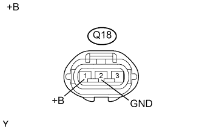

ПРОТИВОУГОННАЯ СИСТЕМА > Цепь сирены противоугонной системы |
| 1.ВЫПОЛНИТЕ ДИАГНОСТИКУ В РЕЖИМЕ ACTIVE TEST С ПОМОЩЬЮ ПОРТАТИВНОГО ДИАГНОСТИЧЕСКОГО ПРИБОРА (СИРЕНА ПРОТИВОУГОННОЙ СИСТЕМЫ) |
Действуя в соответствии с указаниями на дисплее портативного диагностического прибора, выберите режим Active Test (Нажмите здесь).
| Информация на дисплее прибора | Испытываемое устройство | Диапазон регулирования | Замечание по диагностике |
| Security Horn2 | Сирена противоугонной системы (сирена с автономным источником питания) | ON (ВКЛ) / OFF (ВЫКЛ) | - |
|
| ||||
| OK | ||
| ||
| 2.ПРОВЕРЬТЕ ЖГУТ ПРОВОДОВ И РАЗЪЕМ (СИРЕНА ПРОТИВОУГОННОЙ СИСТЕМЫ – АККУМУЛЯТОРНАЯ БАТАРЕЯ И МАССА) |
|  |
Отсоедините разъем Q18 сирены.
Измерьте сопротивление в соответствии со значениями, приведенными в таблице ниже.
| Контакты для подключения диагностического прибора | Условие | Заданные условия |
| Q18-2 (GND) - масса | Всегда | Менее 1 Ом |
Измерьте напряжение в соответствии со значениями, приведенными в таблице.
| Контакты для подключения диагностического прибора | Условие | Заданные условия |
| Q18-1 (+B) - масса | Всегда | 11 - 14 В |
| *a | Вид спереди разъема со стороны жгута проводов: (к сирене противоугонной системы в сборе) |
|
| ||||
| OK | |
| 3.ПРОВЕРЬТЕ ГЛАВНЫЙ ЭБУ КУЗОВА (ВЫХОДНОЙ СИГНАЛ) |
С помощью осциллографа проверьте форму сигнала 1.
| *a | Устройство с подсоединенным жгутом проводов (главный ЭБУ кузова) | *b | Осциллограмма 1 |
| *c | Осциллограмма 2 | - | - |
| Параметр / Устройство | Описание |
| Контакты для подключения диагностического прибора | G63-18 (SSCL) - масса |
| Настройки прибора | 2 В / дел., 20 мс/ дел. |
| Условие | При переходе из состояния готовности или подготовки к включению в состояние неготовности |
С помощью осциллографа проверьте форму сигнала 2.
| Параметр / Устройство | Описание |
| Контакты для подключения диагностического прибора | G63-18 (SSCL) - масса |
| Настройки прибора | 2 В / дел., 20 мс/ дел. |
| Условие | При переходе из состояния подготовки к включению в состояние готовности |
|
| ||||
| OK | ||
| ||
| 4.ПРОВЕРЬТЕ ЖГУТ ПРОВОДОВ И РАЗЪЕМ (СИРЕНА ПРОТИВОУГОННОЙ СИСТЕМЫ – ГЛАВНЫЙ ЭБУ КУЗОВА) |
Отсоедините разъем Q18 сирены.
Отсоедините разъем G63 ЭБУ.
Измерьте сопротивление в соответствии со значениями, приведенными в таблице ниже.
| Контакты для подключения диагностического прибора | Условие | Заданные условия |
| Q18-3 (CONT) - G63-18 (SSCL) | Всегда | Менее 1 Ом |
| Q18-3 (CONT) или G63-18 (SSCL) - масса | Всегда | 10 кОм или более |
|
| ||||
| OK | ||
| ||